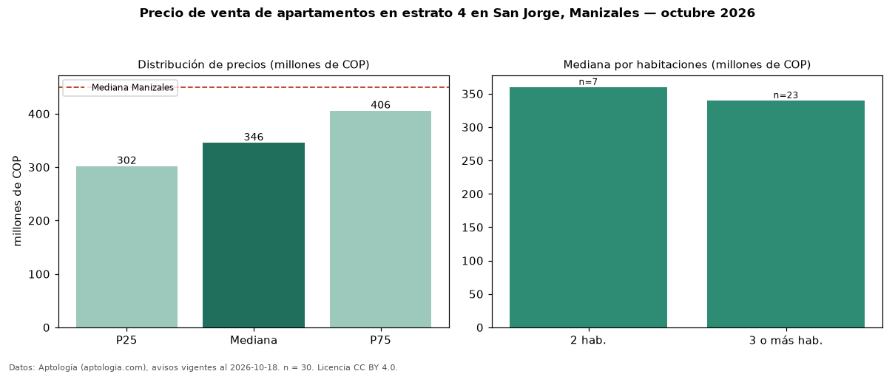

Precio de venta de apartamentos en estrato 4 en San Jorge, Manizales — octubre 2026
COP 346 millones es el precio mediano de apartamentos en estrato 4 en venta en San Jorge, Manizales (n = 30 avisos). Frente a la mediana de toda la vivienda de estrato 4 de San Jorge (COP 420 millones, n = 51), queda 18 % por debajo; este segmento reúne el 59 % de esos avisos. El área mediana anunciada es 64 m². El segmento con más oferta es el de 3 o más habitaciones (23 avisos, mediana COP 340 millones); pasar de 2 habitaciones a 3 o más habitaciones cambia la mediana −6 %. La administración mediana declarada es COP 220.000 al mes (n = 24). La mediana de todos los apartamentos en venta de Manizales es COP 450 millones (−23 % de diferencia). La mitad central de los avisos va de COP 302 millones a COP 406 millones (razón 1,3), una dispersión baja. Datos: Aptología (aptologia.com), CC BY 4.0 — https://www.aptologia.com/venta/manizales/san-jorge. Archivos: PDF, CSV con las cifras y gráfica PNG.

| Avisos únicos | 30 |
|---|---|
| Percentil 25 | COP 301.750.000 |
| Mediana | COP 345.500.000 |
| Percentil 75 | COP 405.500.000 |
Fuente: avisos vigentes de portales inmobiliarios recopilados por Aptología, deduplicados (mínimo 30 avisos únicos por celda). Precios pedidos, no cerrados. Fecha: 2026-10-18.